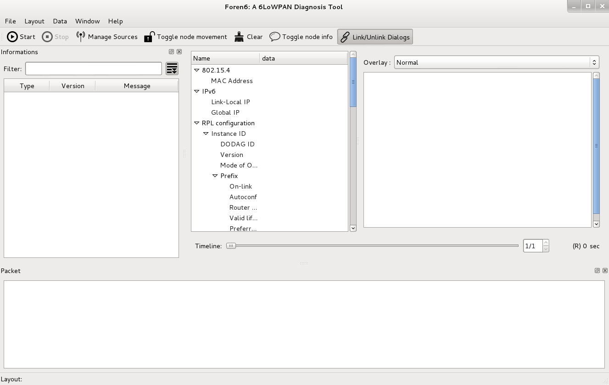
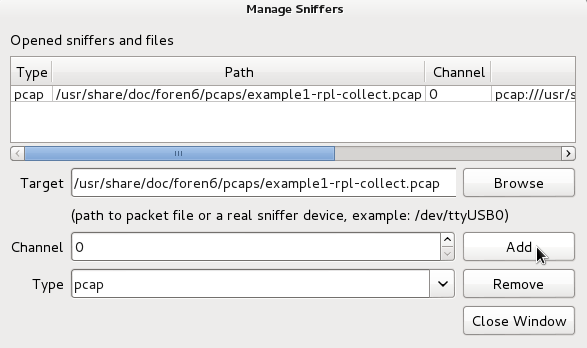
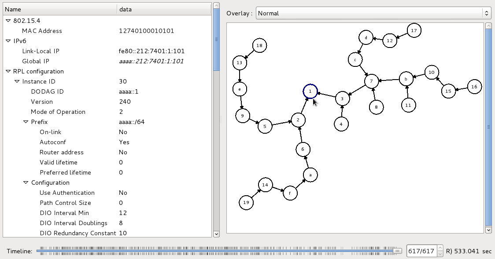

Example 1: Importing a packet trace of a RPL collect network
Introduction: why a packet trace import mode?
In this first example, we will analyse a previously recorded PCAP file. This mode of operation comes in handy in different kinds of situations. It is not always practical to capture live packets and analyse them at the same time, especially for outdoor deployments where post-analysis will occur in an office after the packet capture. In other cases, it allows an expert to analyse packet traces provided by network administrators not necessarily familiar with Contiki and standards like 6LoWPAN and RPL.
This example is meant to be standalone. Reading the User Manual is recommended but not required to follow this example.
Launch Foren6
After completing the installation, launch the Foren6 application in your Linux or MacOS X desktop menu (in Linux, go to Applications > Internet > Foren6).
GUI Setup
Clear any previously used layout with 'Layouts > Clear Layout’. Add an Event Widget by selecting the 'New Information Window’ in the 'Window’ menu. This opens a floating window, which you can dock inside the main window by dragging it. Open a Packet Window with 'New Packet Window’ from the 'Window’ menu, and dock that one as well. After docking these two widgets, your window show have 4 main parts like the screenshot below:

Select a PCAP as source
To configure an input device, click the 'Manage Sources’ button or select it from the 'File’ menu.

This opens the Manage Sources dialog, prompting for a source device, 802.15.4 channel and type of input. In this case, we will use an existing PCAP as source. Hit the 'Browse’ button next to 'Target’, navigate to /usr/share/doc/foren6/pcaps and select the example1-rpl-collect.pcap file. Set the 'Type’ field to pcap and hit 'Add’, then close the Manage Sources dialog.

Start the capture
Once the source has been selected, the 'Start’ button will be enabled.

Clicking it starts the packet capture. Captured packets will appear in the Event Widget, and Foren6 will attempt to represent the network topology in the Network Visualizer window as best it can based on available control and data packets. Events are tagged on the timeline at the bottom in chronological order. Since we are importing an existing packet trace, Foren6 reads the whole file at once and scrolls the timeline to the end of the capture.
After the PCAP has been parsed, the RPL DODAG will be visible in the Network Visualizer, as below:

Foren6 identifies a RPL Root as the node which announces ranks equal to the RPL Root Rank, set as 256 by default, as it is the default in Contiki (note: this can be changed in File -> preferences for other types of RPL networks). The RPL Root is drawn with a thicker circle than the rest. When clicking on a node, the Node Information panel will list all the known information. Above, we have clicked on the RPL Root, and we can the DODAD ID, Instance ID, Mode of Operation, etc. Futher down, we see some generic network statistics and a recontructed routing table based on observed application packets.
Navigating through the history
It is often useful to scroll back through the history to analyse a past behavior. Here, we will observe the RPL DODAG establishment by scrolling through the entire capture history. To do so, scroll the timeline’s horizontal slider back all the way to the left. When doing so, you will notice that the Network Visualiser is synchronized with the timeline.